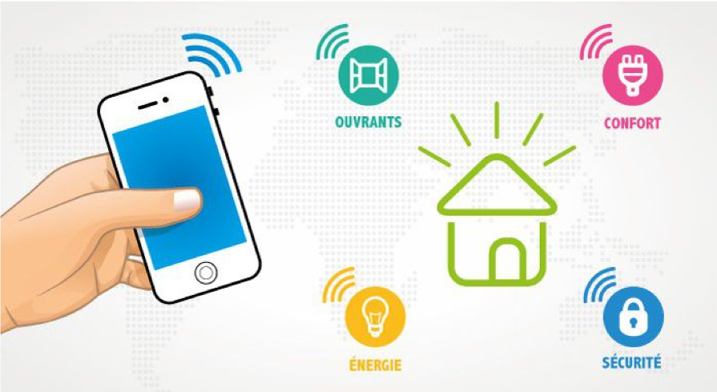
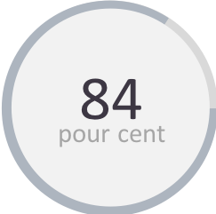
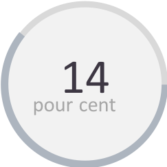
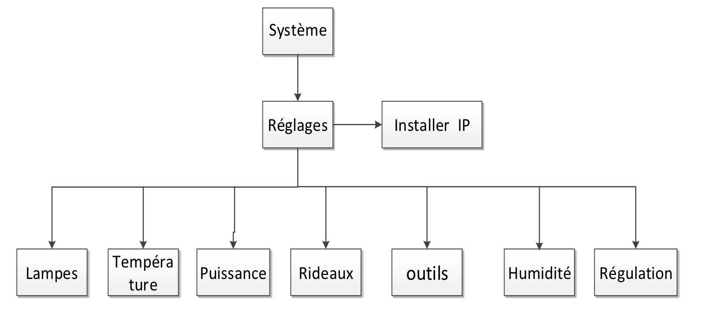
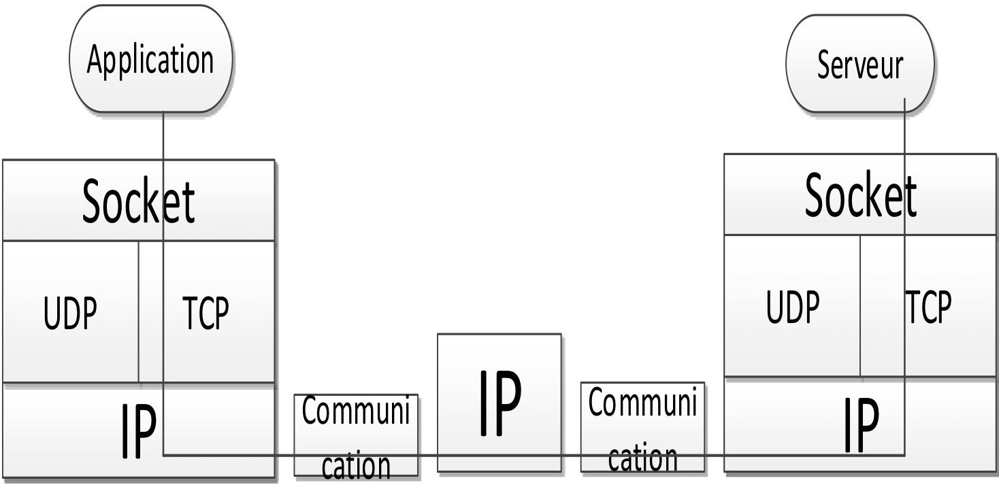
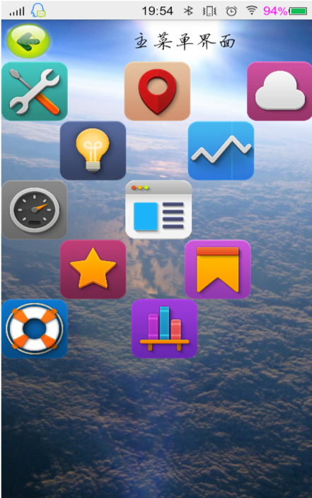
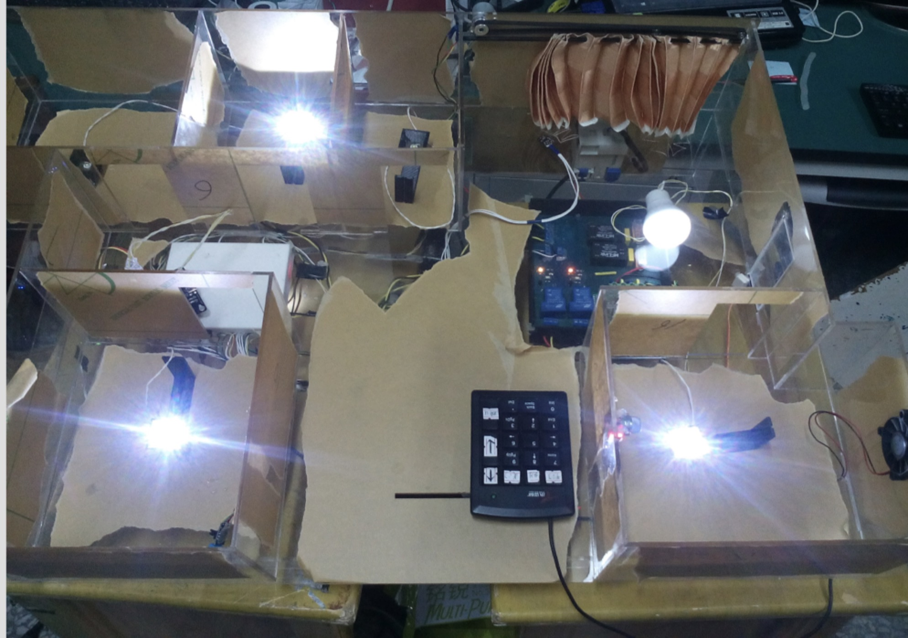

le système contrôle intelligent des appareils électroménager
sous le système Android
Tuteur de projet : Jingliang Zhang
Xueting SUN
Introduction
|  |
Le plan
- Le système Android
- Etude du système
- Conception du système
- Résultats et Discussions
1. Le système Android
- 1.1 Andy Rubin
- 1.2 Le système d'exploitation mobile
- 1.3 Logiciel : Eclipse
1.1 Andy Rubin
|
1.2 Le système d'exploitation mobile
 |
 |
 |
1.2 Le système d'exploitation mobile
|
|
- Le noyau Linux avec les pilotes
- Les bibliothèques logicielles
- Un environnement d'exécution
- Kit de développement d'applications
- Un lot d'applications standard
1.3 Logiciel : Eclipse
|

|
2. Etude du système
- 2.1 Sujet du projet
- 2.2 Analyse du projet
2.1 Sujet du système

2.1 Conception logique du système de commande
2.2 Analyse du système
Protocole de contrôle de transmissions
fonctionne en trois phases :
|
3. Conception du système
- 3.1 TProtocole de contrôle de transmissions
- 3.2 Le mode connecté : Socket
3.1 Protocole de contrôle de transmissions
|
 |
3.2 Le mode connecté : Socket
La socket : Lien entre l'applicatif et la couche transport
3 informations obligatoires : L'address IP, Le protocole utilisé, Le numéro de port3.2.1 La théorie de la communication
4. Résultats et Discussions
|

4.1 Le travaux de simulation |

4.2 L'interface d'application |
Conclusion
- Contrôle intelligent des appareils
- Programme très compétitive
- Suite possible : création une base de données